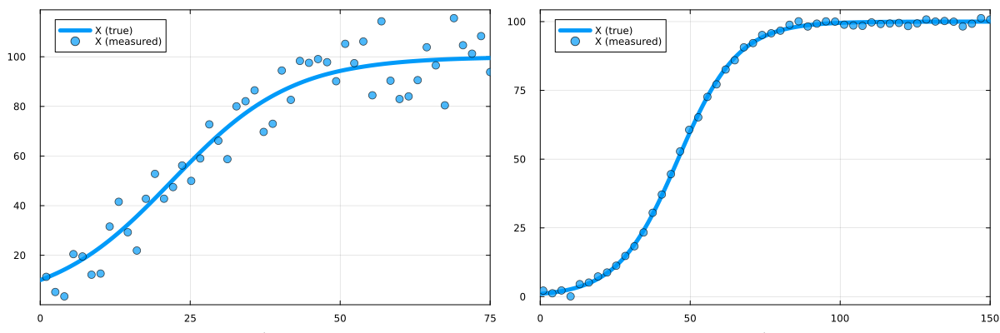
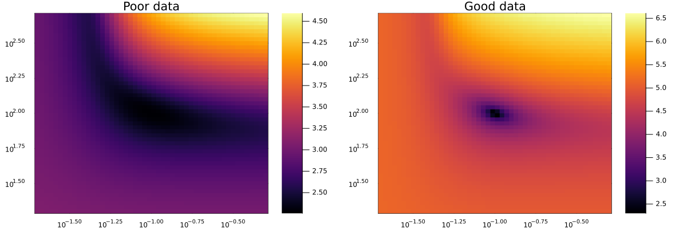
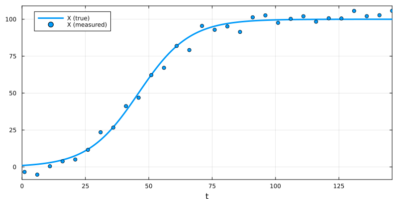
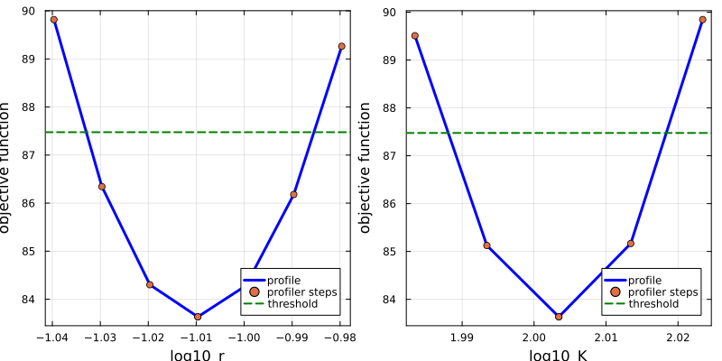
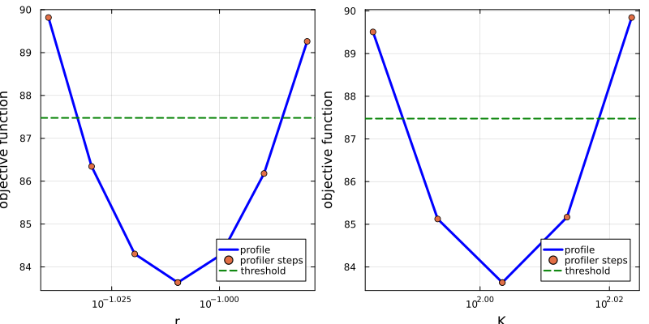
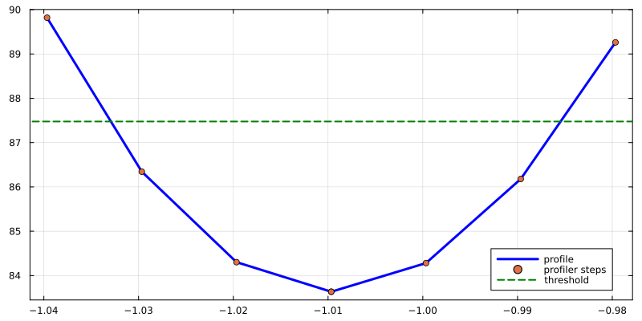

Practical Identifiability Analysis using LikelihoodProfiler.jl
Environment setup and package installation
The following code sets up an environment for running the code on this page.
using Pkg
Pkg.activate(; temp = true) # Creates a temporary environment, which is deleted when the Julia session ends.
Pkg.add("Catalyst")
Pkg.add("DataFrames")
Pkg.add("Distributions")
Pkg.add("LikelihoodProfiler")
Pkg.add("Plots")
Pkg.add("PEtab")
Pkg.add("Optim")
Pkg.add("OptimizationLBFGSB")
Pkg.add("OrdinaryDiffEqDefault")Quick-start example
The following code provides a brief example of how to compute profile likelihood diagrams using the LikelihoodProfiler.jl package. Likelihood profiles are one of the most common approaches for performing practical identifiability analysis.
# Create model (a logistic growth model).
using Catalyst
log_growth = @reaction_network begin
r, X --> 2X
2r/K, 2X --> X
end
# Generate some (synthetic) data for the fitting procedure.
using Distributions, OrdinaryDiffEqDefault, Plots
t_measurement = 1.0:5:150.0
u0 = [:X => 1.0]
p_true = [:r => 0.1, :K => 100.0]
oprob_true = ODEProblem(log_growth, u0, t_measurement[end], p_true)
sol_true = solve(oprob_true)
X_true = sol_true(t_measurement; idxs = :X)
σ = 5.0
X_observed = [rand(Normal(X, σ)) for X in X_true]
plot(sol_true; label = "X (true)")
plot!(t_measurement, X_observed; label = "X (measured)", color = 1, seriestype = :scatter)
# Recover the ground-truth parameter values from the data using PEtab.
# Using Optimization.jl-created `OptimizationProblem`s as a base for LikelihoodProfiler is also possible.
using DataFrames, Optim, PEtab
observables = [PEtabObservable(:obs_X, :X, σ)]
pest = [PEtabParameter(:r), PEtabParameter(:K)]
measurements = DataFrame(obs_id = "obs_X", time = t_measurement, measurement = X_observed)
model = PEtabModel(log_growth, observables, measurements, pest; speciemap = u0)
petab_prob = PEtabODEProblem(model)
petab_sol = calibrate_multistart(petab_prob, Optim.IPNewton(), 3)
# Compute and plot the likelihood profiles.
using LikelihoodProfiler, OptimizationLBFGSB
pl_prob = ProfileLikelihoodProblem(petab_sol, petab_prob)
pl_method = OptimizationProfiler(optimizer = LBFGSB(), stepper = FixedStep(; initial_step = 5e-3))
pl_sol = LikelihoodProfiler.solve(pl_prob, pl_method)
plot(pl_sol) # Parameters are plotted on a log scale by default.
During parameter fitting, parameter values are inferred from data. Identifiability describes the extent to which parameter values can be uniquely determined from that data[1]. In some circumstances, multiple parameter sets yield equally good model-to-data fits, making it impossible to determine which set corresponds to the true system dynamics. Such parameters are called non-identifiable.
Identifiability can be divided into structural and practical identifiability. Structural identifiability considers only the model structure, and determines which parameters are inherently potentially identifiable without directly considering available data. Structural identifiability and methods for assessing it are described in the corresponding tutorial. Here we instead address practical identifiability, which describes our ability to identify unique parameter values given the available data. Specifically, we demonstrate how to compute likelihood profiles (a primary tool for assessing practical identifiability)[2] using the LikelihoodProfiler.jl package.
Introduction to practical identifiability
Introduction to practical identifiability
Before fitting parameters, we typically perform structural identifiability analysis to confirm that parameters are, in theory, identifiable given infinite quantities of noiseless data. In practice, available data is far more limited. Practical identifiability analysis is typically carried out after parameter fitting, to determine which estimated parameter values are reliably identifiable from the actual data (and can therefore be trusted).
Let us consider the following logistic growth model:
using Catalyst
log_growth = @reaction_network begin
r, X --> 2X
2r/K, 2X --> X
end\[ \begin{align*} \mathrm{X} &\xrightleftharpoons[\frac{2 r}{K}]{r} 2 \mathrm{X} \end{align*} \]
We generate two synthetic datasets, one of higher quality than the other:
using Distributions, OrdinaryDiffEqDefault
function generate_data(u0, σ, tend)
t_measurement = range(1.0, tend; length = 50)
p_true = Dict([:r => 0.1, :K => 100.0])
oprob_true = ODEProblem(log_growth, u0, t_measurement[end], p_true)
sol_true = solve(oprob_true)
X_true = sol_true(t_measurement; idxs = :X)
X_observed = [rand(Normal(X, σ)) for X in X_true]
return t_measurement, X_observed, sol_true
end
u0_poor = [:X => 10.0]; σ_poor = 10.0; tend_poor = 75.0;
u0_good = [:X => 1.0]; σ_good = 1.0; tend_good = 150.0;
t_measurement_poor, X_observed_poor, sol_poor = generate_data(u0_poor, σ_poor, tend_poor)
t_measurement_good, X_observed_good, sol_good = generate_data(u0_good, σ_good, tend_good)Plotting the datasets, we can see that one has less noise and covers more of the system dynamics. Using this higher-quality dataset, we should be better able to recover the true parameter values.
using Plots
function plot_data(t_measurement, X_observed, sol_true)
plot(sol_true; label = "X (true)", lw = 5)
plot!(t_measurement, X_observed; label = "X (measured)", ms = 5, color = 1, seriestype = :scatter, alpha = 0.7)
end
plot(
plot_data(t_measurement_poor, X_observed_poor, sol_poor),
plot_data(t_measurement_good, X_observed_good, sol_good);
size = (1200, 400)
)
Next, we use PEtab.jl to create optimisation problems for recovering the two model parameters ($r$ and $K$) from each dataset.
using DataFrames, PEtab
function make_lossfun(t_measurement, X_observed, u0, σ)
observables = [PEtabObservable(:obs_X, :X, σ)]
pest = [PEtabParameter(:r), PEtabParameter(:K)]
measurements = DataFrame(obs_id = "obs_X", time = t_measurement, measurement = X_observed)
model = PEtabModel(log_growth, observables, measurements, pest; speciemap = u0)
return PEtabODEProblem(model)
end
petab_prob_poor = make_lossfun(t_measurement_poor, X_observed_poor, u0_poor, σ_poor)
petab_prob_good = make_lossfun(t_measurement_good, X_observed_good, u0_good, σ_good)Rather than simply finding the single best-fitting parameter set, assessing identifiability requires exploring the full space of parameter sets that yield good model-to-data fits. Since we have only two parameters, we can extract the loss function from the PEtab problem and plot it across parameter space:
r_range = logrange(0.1/5, 5*0.1; length = 50)
K_range = logrange(100.0/5, 5*100.0; length = 50)
losses_poor = [log10(petab_prob_poor.nllh([log10(r), log10(K)])) for r in r_range, K in K_range]
losses_good = [log10(petab_prob_good.nllh([log10(r), log10(K)])) for r in r_range, K in K_range]
plot(
heatmap(r_range, K_range, losses_poor'; xscale = :log10, yscale = :log10, title = "Poor data"),
heatmap(r_range, K_range, losses_good'; xscale = :log10, yscale = :log10, title = "Good data");
size = (1200, 400)
)
The two datasets produce strikingly different loss landscapes. For the high-quality data, there is a single well-defined minimum at the ground-truth parameter set, all other parameter combinations yield clearly worse fits. For the low-quality data, however, a broad "banana"-shaped region of parameter sets all achieve similarly good fits. This region includes the ground-truth but also many alternatives that the loss function cannot distinguish. Such parameters are non-identifiable. For high-dimensional problems, computing the full loss landscape is infeasible. Instead, likelihood profiles, essentially projections of the loss landscape onto individual parameters, are used. These are described in the next section.
Computing profile likelihood diagrams using LikelihoodProfiler
Here we combine PEtab.jl and LikelihoodProfiler.jl to set up a parameter fitting problem and compute likelihood profiles. LikelihoodProfiler can also be used in conjunction with fitting problems created via Optimization.jl. For a full reference, see LikelihoodProfiler's documentation.
First, we generate a synthetic dataset for the logistic growth model from the previous section:
# Declare the model.
using Catalyst
log_growth = @reaction_network begin
r, X --> 2X
2r/K, 2X --> X
end
# Generate synthetic data.
using Distributions, OrdinaryDiffEqDefault, Plots
t_measurement = 1.0:5:150.0
u0 = [:X => 1.0]
p_true = [:r => 0.1, :K => 100.0]
oprob_true = ODEProblem(log_growth, u0, t_measurement[end], p_true)
sol_true = solve(oprob_true)
X_true = sol_true(t_measurement; idxs = :X)
σ = 5.0
X_observed = [rand(Normal(X, σ)) for X in X_true]
plot(sol_true; label = "X (true)")
plot!(t_measurement, X_observed; label = "X (measured)", color = 1, seriestype = :scatter)
Next, we use a standard PEtab.jl workflow to set up a parameter fitting problem:
using DataFrames, Optim, PEtab
observables = [PEtabObservable(:obs_X, :X, σ)]
pest = [PEtabParameter(:r), PEtabParameter(:K)]
measurements = DataFrame(obs_id = "obs_X", time = t_measurement, measurement = X_observed)
model = PEtabModel(log_growth, observables, measurements, pest; speciemap = u0)
petab_prob = PEtabODEProblem(model)
petab_sol = calibrate_multistart(petab_prob, Optim.IPNewton(), 3)Profile likelihood computation with LikelihoodProfiler consists of three steps: (1) constructing a ProfileLikelihoodProblem, (2) selecting a profiling method, and (3) calling solve. Non PEtab-based workflows are also supported (see the LikelihoodProfiler documentation). Here we use an OptimizationProfiler with an LBFGSB optimizer.
using LikelihoodProfiler, OptimizationLBFGSB
pl_prob = ProfileLikelihoodProblem(petab_sol, petab_prob)
pl_method = OptimizationProfiler(optimizer = LBFGSB(), stepper = FixedStep(; initial_step = 1e-2))
pl_sol = LikelihoodProfiler.solve(pl_prob, pl_method)Finally, we plot the profiles:
plot(pl_sol)
The plot shows, for each parameter, its likelihood profile: the best achievable loss when all other parameters are optimized with that parameter held fixed. For example, the profile for $r$ at $r = 1.0$ gives the minimum loss over all other parameters with $r$ constrained to $1.0$. If a wide range of parameter values yields a loss close to the global optimum, the parameter is poorly constrained, a sign of non-identifiability.
For likelihood-based problems (such as those generated by PEtab), a threshold can be computed such that the 95% confidence interval corresponds to where the profile intersects that threshold; LikelihoodProfiler plots this threshold automatically. By default, LikelihoodProfiler determines the profile-likelihood threshold using the likelihood-ratio criterion with confidence level conf_level = 0.95 and degrees of freedom df = 1. A custom threshold may also be passed explicitly to ProfileLikelihoodProblem, or computed using user-specified values of conflevel and df. The resulting confidence-interval endpoints can then be obtained with `endpoints(plsol)`."
Since PEtab internally transforms parameters to a logarithmic scale, plot(pl_sol) shows log₁₀-transformed values on the x-axis. To display the actual parameter values (but still with log-scaled x-axis), we can use:
plot(pl_sol; xtransform = exp10, xscale = :log10, xguide = ["r" "K"])
To plot the profile for a single parameter, index into pl_sol. For example, to plot only $r$:
plot(pl_sol[1])
Likelihood profiling methods and options
LikelihoodProfiler implements several profiling methods, each with distinct advantages. A full list with options is available here. Currently available methods are:
OptimizationProfiler: Re-optimises the problem at each parameter step, using either fixed or adaptive step sizes.IntegrationProfiler: Uses an ODE solver to trace the trajectory of the likelihood profile.CICOProfiler: A specialised profiler designed to compute only the intersection points of the profile with the 95% confidence interval threshold.QuadraticApproxProfiler: Approximates the profile curvature at the optimum. Less accurate but highly performant.
In addition to method-specific options, several arguments can be passed to ProfileLikelihoodProblem or solve. A full list is available here. A few notable examples:
idxs: Specifies which parameters to profile. E.g.idxs = [:log10_r]to profile only $r$ (PEtab operates on log-transformed parameters).profile_lowerandprofile_upper: Set lower and upper bounds for the profiles.parallel_type: Enables parallelisation of profile computation when passed tosolve. E.g.parallel_type = :threadsfor multithreading.
Citation
If you use this functionality in your research, please cite the following paper to support the authors of the LikelihoodProfiler package:
@article{Borisov2026,
doi = {10.21105/joss.09501},
url = {https://doi.org/10.21105/joss.09501},
year = {2026},
publisher = {The Open Journal},
volume = {11},
number = {117},
pages = {9501},
author = {Borisov, Ivan and Demin, Aleksander and Metelkin, Evgeny},
title = {LikelihoodProfiler.jl: Unified profile-likelihood workflows for identifiability and confidence intervals},
journal = {Journal of Open Source Software}
}Similarly, if you are using the PEtab interface, please also cite the following paper:
@article{PEtabBioinformatics2025,
title={PEtab.jl: advancing the efficiency and utility of dynamic modelling},
author={Persson, Sebastian and Fr{\"o}hlich, Fabian and Grein, Stephan and Loman, Torkel and Ognissanti, Damiano and Hasselgren, Viktor and Hasenauer, Jan and Cvijovic, Marija},
journal={Bioinformatics},
volume={41},
number={9},
pages={btaf497},
year={2025},
publisher={Oxford University Press}
}References
- 1Simpson M.J., Baker R.E., Parameter Identifiability, Parameter Estimation, and Model Prediction for Differential Equation Models, SIAM Review (2026).
- 2Raue A., et. al., Structural and practical identifiability analysis of partially observed dynamical models by exploiting the profile likelihood, Bioinformatics (2009).